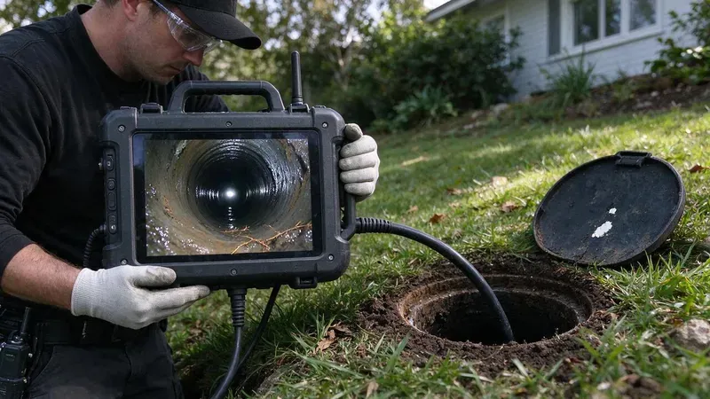

What a Standard Home Inspection Misses
A general home inspector runs the faucets and flushes the toilets, and that is about where the drain check ends. The sewer lateral, the pipe from the house to the public main or septic tank, never gets looked at. It is also the most expensive pipe on the property to replace. Sellers rarely know its condition.
Our crews at HWR Plumbing inspect lines for buyers across South Dakota, and the camera work rarely takes more than an hour. It costs a small fraction of a new sewer line. Vacant houses are the riskiest, because a line can sit broken for months with nobody flushing to reveal it.
Soils in South Dakota range from glacial deposits in the east to clay rich ground farther west that swells when wet and shrinks when dry.
Older laterals were often clay tile or cast iron, and years of shifting soil and growing roots break both of them down. Clay joints separate and let roots in. Cast iron corrodes along the bottom until the sewage is flowing over soil, not pipe. You will not see either problem from inside until something backs up.
What the Camera Shows
The camera goes in through a cleanout or a pulled toilet and travels the full length of the line out to the main. A locator on the camera head lets us mark the exact spot and depth of any problem on the ground above. You get a recording. Here is what we look for.
- Root intrusion at joints
- Bellies, or sags, that hold standing water
- Cracks, breaks and offset joints
- Corroded or collapsed cast iron
- Orangeburg pipe that has started to flatten
- Grease buildup or debris from a past backup
Deep frost and heavy clay can limit how well a drain field works, so regular pumping and keeping vehicles off the field matter.
On a septic property, the camera also shows the line from the house to the tank. That run gets missed often. Roots or a belly near the tank inlet show up often, and pumping the tank does nothing for them. Request the last pumping date and any drain field paperwork from the seller. A camera does not test the drain field itself, so a septic inspection is a separate step.
Inspection Cost Versus Repair Cost
Sewer line repairs range from a single spot repair to a full lateral replacement under the driveway. One spot repair can be a day's work, but replacing a full line under concrete may mean a week plus restoration. After closing, the bill belongs to you. Before closing, it is a negotiating point.
Buyers use the video in a few ways. Some ask for a price reduction or a repair credit at closing. Others ask the seller to have the repair done by a licensed plumber with a permit before closing, then rerun the camera to confirm it. The video is evidence.
Scheduling an Inspection
Book the camera inspection during your inspection period, not after. Most purchase contracts only give you a short window, often somewhere around 7 to 10 days, to raise any repair issues. You can reach HWR Plumbing at (605) 480-9736. Have the address and the year the house was built ready when you call. Most inspections get scheduled within two days, and the recording goes to you and your agent that afternoon.
Need a licensed plumber in South Dakota?
HWR Plumbing answers 24/7 and offers same-day service across South Dakota.